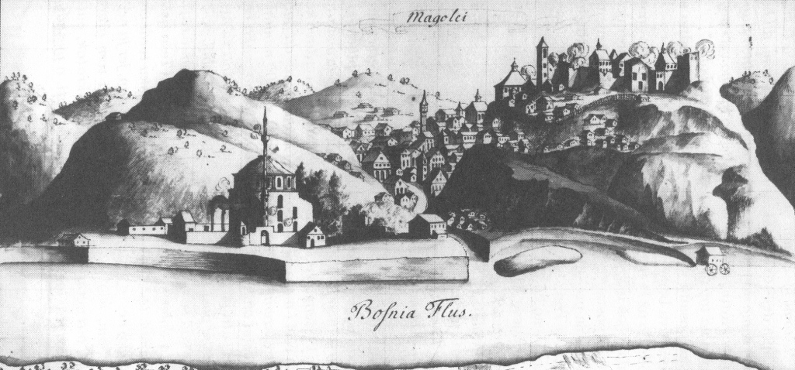
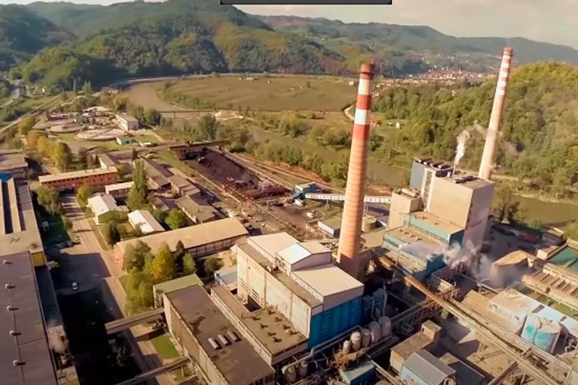
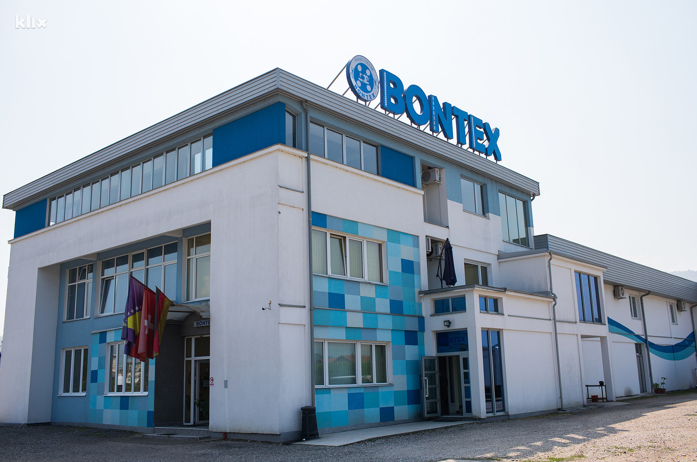
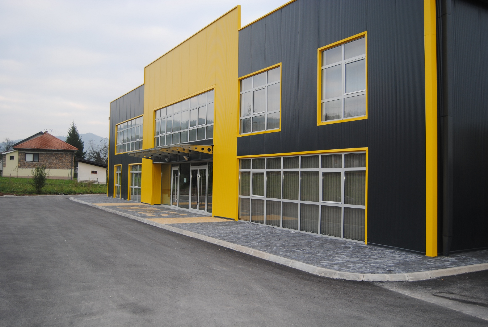

Početak povijesti o Maglaju

Maglaj je naseljeno mjesto i jedna od 12 općina u Zeničko-dobojskom kantonu. Prvi put se direktno spominje u poznatoj povelji "Sub castro nostro Maglay" ("Pod našom tvrđavom Maglaj").
U Turskim dokumentima Maglaj se spominje 1485. godine, a prvi diplomatski dokument je Ugovor između Ugarske i Turske kojim se Maglaj priznaje Turcima 20. augusta 1503. godine. Prema novim nagađanjima grad odnosno tvrđava ranije se zvao Stražba, ali kako je mjesto, dakle tvrđava, bila često u gustoj magli koja se tu zadržavala, po magli je i dobio ime.
Neolit i rimski period
Područje maglajske općine bilo je naseljeno još u prahistorijsko doba. Nalazi iz ovog perioda locirani su kod Novog Sehera. Očito je, obzirom na povoljne mogućnosti da je u to doba posebno u dolini Bosne postojalo još pokoje naselje. Na maglajskom području bilo je i nekoliko prahistorijskih i rimskih utvrdjenja. Gradina U selu Bakotic, tipski najizražajniji primjerak utvrdjenog prahistorijskog naselja smještenog na planini Ozren iznad desne obale rijeke Bosne. Dva susjedna naselja, Gradac u Krsnom Polju i Gradac u naselju Strajiste izgledaju kao satelitska utvrdjenja u odnosu na ovu gradinu. Smjestena na visoravni imala su dobar uvid i kontrolu kretanja putnim pravcima u dolini rijeke Bosne. Gradina u selu Ošve pripada visiji na lijevoj obali Bosne. Osim gradinskog položaja koji je očit u reljefu, donedavno su postojali i fragmenti keramike na jugozapadnoj i jušnoj strani uzvišenja. S druge strane rijeke Bosne, na istaknutom, za odbranu pogodnom položaju, u selu Paklenica jos je jedna gradina. Iz rimskog perioda pronadjen je lijep primjerak novca s područja Kosove i Sahin Kamena, kao i bakrenog novca na njivama Gromile i Crkvište kod Novog Sehera. Ostaci putnog pravca Osve-Ravna-Kosova takodjer su iz rimskog perioda.

Nalazi iz srednjeg vijeka ukazuju na znatnu naseljenost ovog područja u to doba sto potvrdjuje 100 pronadjenih stećaka u 9 naselja i 17 nekropola, a koji su danas nažalost većim dijelom totalno devastirani. Maglajska tvrdjava je takodjer iz ovog perioda a nastala je najkasnije u 14 vijeku.
Osmanski period
Turci su se prvi put pojavili u Usori 1415. godine kao saveznici Bosanaca protiv Ugara. Ponovo se pojavljuju u Usori 1426. godine ali ovaj puta kao osvajači, Maglaj osvajaju tek 50 godina kasnije.
Austro-Ugarska
Austro-ugarske trupe okupirale su Bosnu i Hercegovinu 1878. godine, a 3. augusta VII husarska regimenta upala je u zasjedu kod Maglaja izgubivši 46 vojnika. O tom događaju svjedoci i spomenik koji su Austrijanci podigli na obali rijeke Bosne. Novi gospodari doniješe i novi način života. 24. marta 1879 u Maglaj stiže "vatrenjača" ( voz ) uz gromoglasnu topovsku slavu s tvrdjave.
Stanovništvo
Na području općine Maglaj prema popisu stanovništva iz 2013. godine živi 23.146 osoba u odnosu na popis stanovništva iz 1991. godine kada je taj broj iznosio 43.388. Muškaraca ima 11.430, dok je žena 11.716. Najveći broj stanovnika živi u naseljenom mjestu Maglaj Grad, a najmanje u Gornjem Rakovcu i Brusnici. Ukupan broj zaposlenih iznosi 4.936 osoba, dok nezaposlenih je 4.808.
Godinama je prepoznatljiv po fabrici celuloze i papira „Natron“, koja je uspješnom privatizacijom promijenila ime u „Natron-Hayat“ i danas zapošljava najveći broj građana općine. Maglaj je u svijetu poznat i po dugoj tradiciji tekstilne industrije koju čuvaju firme „HM Promet“ i „Bontex“, koji zajedno sa firmom „Excel Assemblies“ zapošljavaju veliki broj građana. Oni svoje proizvode plasiraju van tržišta Bosne i Hercegovine i ponosno promovišu svoj grad.


